AI Agent 是什么？Agent 面试题万字图解
大家好，我是小林。
今年，AI 圈子里最火的一个词，毫无疑问就是 Agent（智能体）。
打开技术社区，满屏都是 Agent，各大厂商发布会，也都在讲 Agent，甚至连招聘 JD 上，都写着「有 Agent 开发经验优先」。
也有很多林友跟我反馈，最近大厂后端面试都会问一些 AI 相关的面试题，一连串的概念砸过来， 直接懵了。
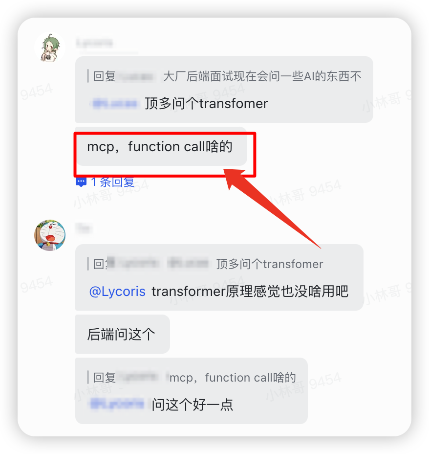
img
上一篇我已经分享过「万字长文图解 openclaw 大厂面试题」，这次我也帮大家整理了近期 Agent 高频面试题：
- 🌟LLM 和 Agent 有什么区别？
- 🌟Agent 和 workflow 有什么区别？
- 🌟Agent 有什么工作模式？
- 🌟function call 是什么？
- 🌟mcp 是协议什么？
- 🌟skills 是什么？
- 🌟function call 、mcp、skills 有什么区别？
- 🌟什么是 A2A 协议？
今天这篇文章，我就用最通俗易懂的方式，把 Agent 相关的核心概念一次性给你讲清楚。这些也是面试中经常会被问到的问题，搞懂了不仅能应付面试，更能帮你真正理解 AI 技术的主旋律。
废话不多说，直接开始。（PS：依然还是万字长文图解，可以收藏起来，慢慢看）
LLM 和 Agent 有什么区别？
要搞懂 Agent，咱们得先从 LLM 聊起，因为 Agent 本质上就是在 LLM 的基础上进化出来的。
什么是 LLM？
LLM，全称 Large Language Model，翻译过来就是大语言模型。
你可以把它想象成一个读了互联网上几乎所有文字的超级学霸。它通过学习海量的文本数据，掌握了人类语言的各种规律和知识。我们平时用的 ChatGPT、Claude、DeepSeek、文心一言，底层都是大语言模型。
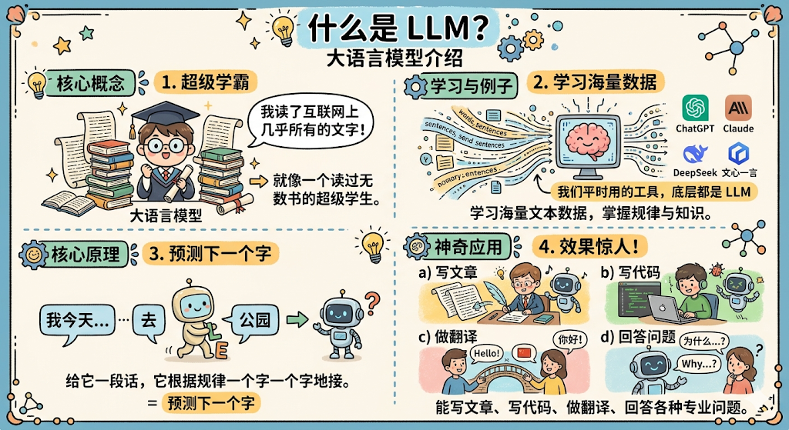
img
LLM 的工作原理说白了就是「预测下一个字」。你给它一段话，它会根据学到的语言规律，一个字一个字地往后接。
听起来简单，但因为它学的数据量实在太大了，这种「接龙」的效果好到令人吃惊，它能写文章、写代码、做翻译、回答各种专业问题。
LLM 有什么弊端？
虽然 LLM 非常聪明，但你仔细想想会发现，它其实有点像一个"有嘴没手"的顾问。
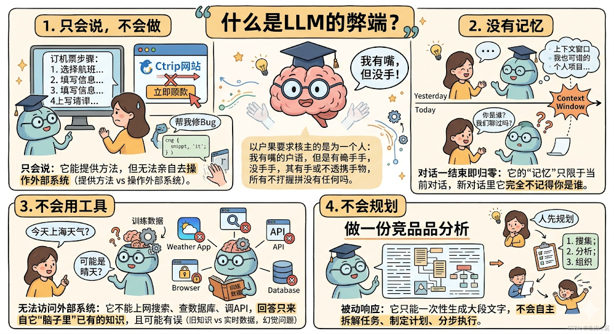
img
第一个弊端是只会「说」不会「做」。你让 LLM「帮我订一张机票」，它会详细告诉你怎么订，但它真没法替你去携程下单。你让它「帮我把这个 Bug 修了」，它能给你改好的代码，但它没法自己打开编辑器去改文件、跑测试。说白了，LLM 的能力被困在对话框里了，它没法跟外部世界互动，没法操作任何系统。
第二个弊端是没有「记忆」。你跟 ChatGPT 聊了一下午，聊了很多你的个人情况和项目背景。结果第二天开一个新对话，它完全不记得你是谁了。因为 LLM 的记忆只限于当前这轮对话的上下文窗口，对话一结束，一切归零。
第三个弊端是不会用「工具」。你问 LLM 今天上海天气怎么样，它只能根据训练数据里的旧知识来猜，而不是像你一样打开天气 App 查实时数据。LLM 本身不能上网搜索、不能查数据库、不能调 API，所有回答都来自它「脑子里」已有的知识，而这些知识不仅有截止日期，还可能是错的，也就是常说的「幻觉」问题。
第四个弊端是不会「规划」。如果你给 LLM 一个复杂任务，比如「帮我做一份竞品分析报告」，它只能一次性生成一大段文字。它不会像人一样先想想应该先搜集哪些信息、分析哪些维度、用什么框架来组织，然后一步一步去执行。LLM 是「被动响应型」的，你问一句它答一句，没法自主拆解任务、制定计划、分步执行。
那 Agent 是什么？
讲完弊端，你可能已经在想：有没有一种方式，能让 LLM 不仅会「说」，还能「做」呢？这就是 Agent 要解决的问题。
Agent，翻译过来叫智能体。简单来说：Agent 就是 LLM 在循环中自主使用工具的系统。
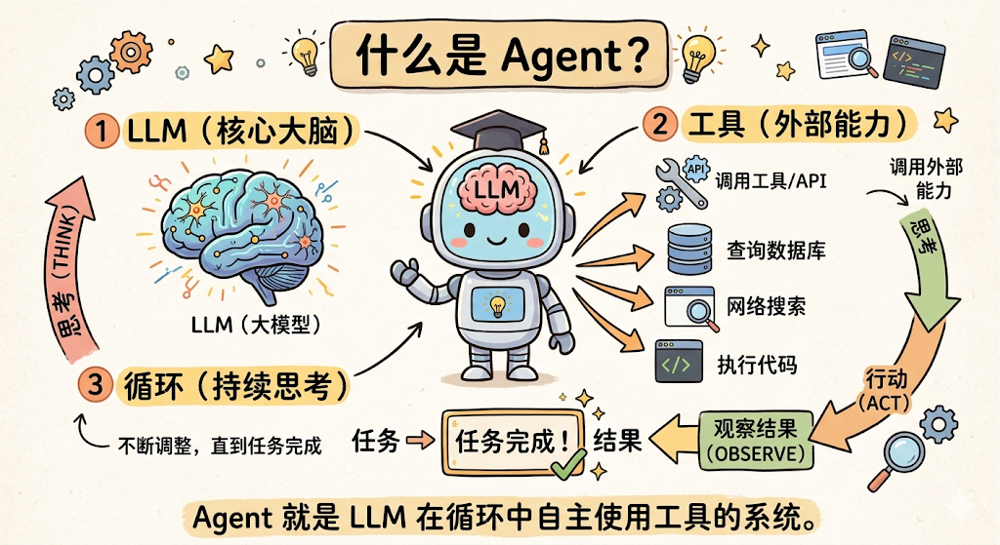
img
这句话有三个关键词，「LLM」说明 Agent 的核心大脑还是大模型，「工具」说明它能调用外部能力，「循环」说明它不是一问一答就结束，而是会不断地思考、行动、观察结果、再思考，直到任务完成。
打个比方，如果 LLM 是一个只会给你建议的顾问，你问他「怎么装修房子」，他能讲一大堆方案，但绝不会亲自动手。
那 Agent 就是一个能动手干活的项目经理，你说「帮我把房子装修好」，他会自己去找装修队、买材料、盯进度、解决问题，直到装修完成。
Agent 怎么解决 LLM 的弊端？
其实理解了上面的比喻，答案就很清楚了。
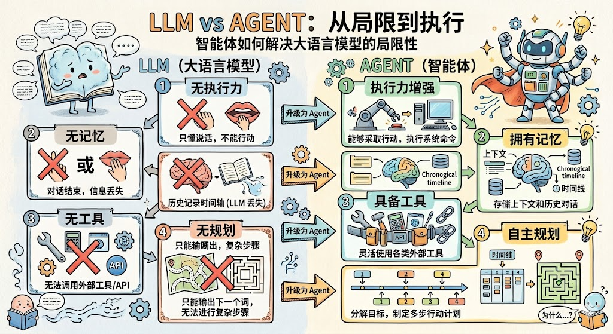
img
- 针对"只会说不会做"，Agent 引入了工具调用能力，可以调用搜索引擎、数据库、API、代码执行器等各种外部工具来真正执行操作。
- 针对"没有记忆"，Agent 配备了记忆系统，包括记住当前任务上下文的短期记忆，和存储在外部数据库中、可以跨对话保留的长期记忆。
- 针对"不会用工具"，业界推出了 MCP 等标准化协议来统一工具接入方式，后面会详细讲。
- 针对"不会规划"，Agent 具备了任务拆解和规划能力，能把一个大目标分解成多个小步骤，然后逐步执行。
Agent 的核心组成
所以一个完整的 Agent 其实就是四个模块的组合。
第一个是大脑，也就是 LLM，负责理解意图、推理判断、决定下一步行动。第二个是规划模块，负责把复杂任务拆解成可执行的步骤。第三个是记忆模块，负责存储和检索信息，让 Agent 能在长时间任务中保持连贯。第四个是工具模块，是 Agent 的「手和脚」，让它能跟外部世界互动。
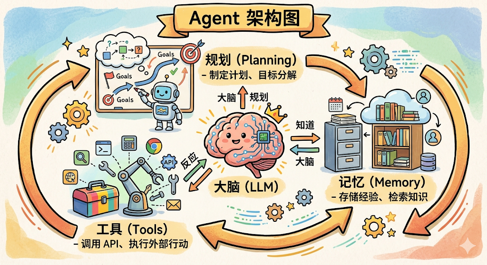
img
用一个实际例子来感受。假设你对 Agent 说：「帮我查一下下周三上海的天气，如果不下雨就在日历上安排一个户外团建。」如果是 LLM，它只会告诉你「你可以通过天气 App 查看天气，然后在日历上创建事件」。
而 Agent 会直接调用天气 API 查到下周三多云 25°C 无降雨，然后自动调用日历 API 创建团建事件，最后告诉你「已安排好了」。LLM 告诉你「怎么做」，Agent 直接帮你「做完了」。这就是本质区别。
Agent 和 Workflow 有什么区别？
搞懂了 LLM 和 Agent 的区别之后，你可能还会碰到另一个容易搞混的概念，Workflow（工作流）。
很多人把 Agent 和 Workflow 混为一谈，但它们的设计理念其实完全不同。
先用一个场景来感受区别
假设有一个任务：处理客户的退款申请。Workflow 的做法是这样的，开发者提前写好整个流程：
- 第一步接收申请
- 第二步调用 LLM 提取关键信息
- 第三步查数据库获取订单详情
- 第四步调用 LLM 判断是否符合退款政策
- 第五步执行退款或生成拒绝邮件，第六步发送通知。
每一步做什么、接下来走哪条路，全都是提前在代码里写死的，LLM 只是在某些步骤中被召唤出来做理解和判断。
而 Agent 的做法完全不同。它收到「处理这个退款申请」的任务后，自己来决定怎么做，先看看申请写了什么，然后觉得需要查一下订单信息，发现情况有点特殊就去搜索退款政策文档，推理判断后决定执行退款，最后给客户发邮件通知。
整个过程中，每一步做什么都是 Agent 自己决定的，而不是代码预先规定的。
两者的定义
Workflow 是指 LLM 和工具通过预定义的代码路径进行编排的系统，而 Agent 是指 LLM 动态主导自身流程与工具调用的系统，由 LLM 自主决定如何完成任务。
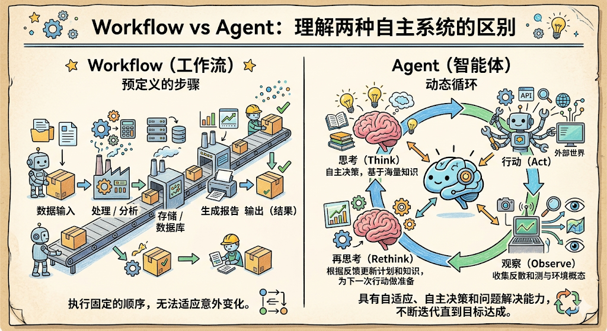
img
翻译成大白话就是：Workflow 是「我（开发者）告诉你每一步该做什么」，Agent 是「我告诉你目标，你自己决定怎么做」。
你可以这样类比：Workflow 就像一条工厂流水线，每个工位做什么、零件从哪来到哪去，全都是提前设计好的。工人（LLM）只需要在自己的工位上完成指定动作。
而 Agent 更像一个自主工作的项目经理，老板只告诉他"把这件事搞定"，然后他自己去调研、制定计划、协调资源、推进执行。
核心区别在哪？
两者最核心的区别在于「谁在控制流程」。
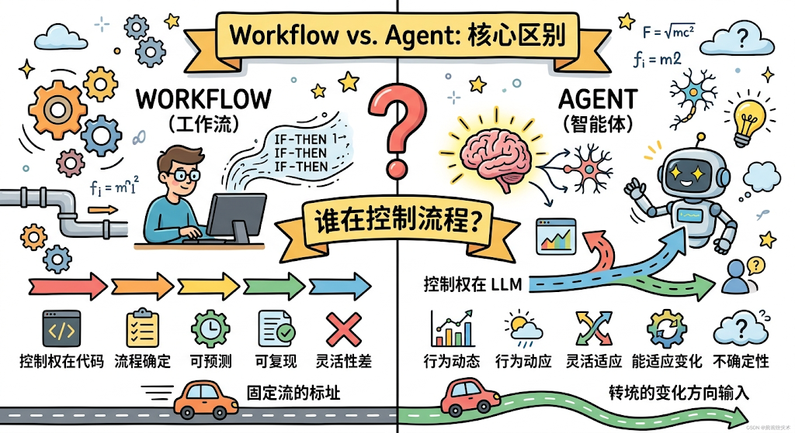
img
Workflow 的控制权在代码手里，流程是确定的、可预测的、可复现的，但灵活性比较差。Agent 的控制权在 LLM 手里，行为是动态的、灵活的、能适应变化的，但相应地也带来了不确定性。
从成本角度看，Workflow 因为流程固定，token 消耗比较省，大约是 Agent 的四分之一。Agent 因为需要反复推理决策，token 消耗要高得多。
从可靠性看，Workflow 行为可预测，出了问题容易定位；Agent 决策路径不确定，调试起来更困难。
什么时候用 Workflow，什么时候用 Agent？
Anthropic 给了一个非常实用的建议：从最简单的方案开始，只在明确需要时才增加复杂度。
如果任务步骤是固定的、可以提前规划好的，或者对可靠性要求很高（比如金融交易、医疗系统），那就用 Workflow。如果任务是开放式的、无法预知所有步骤，或者需要灵活应对各种意外情况，那就用 Agent。
不过在实际生产环境中，最常见的其实是混合架构，Workflow 和 Agent 的结合。正如 LangChain 说的："大多数生产中的 Agent 系统其实是 Workflow 和 Agent 的组合。"
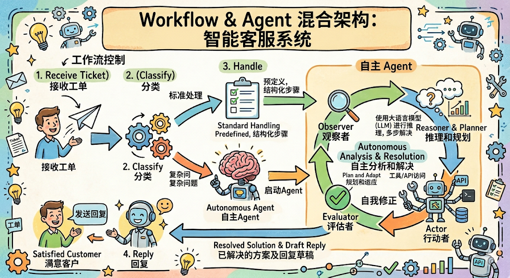
img
比如一个智能客服系统，整体流程用 Workflow 控制（接收工单→分类→处理→回复），但在"处理"环节遇到复杂问题时，会启动一个 Agent 来自主分析和解决。
所以不要把两者对立起来，它们更像是工具箱里的锤子和螺丝刀，不是竞争关系，而是配合关系。
Agent 有什么工作模式？
了解了 Agent 是什么之后，下一个问题就是：Agent 到底是怎么「干活」的？就像人干活有不同的方式，有人喜欢边做边想，有人喜欢先列计划再动手，有人喜欢团队协作，Agent 干活也有不同的工作模式。
模式一：ReAct（边想边做）
ReAct 是目前最经典、最基础的 Agent 工作模式，名字来源于 Reasoning + Acting 的缩写，也就是「推理 + 行动」。几乎所有主流的 Agent 框架底层都在用它。
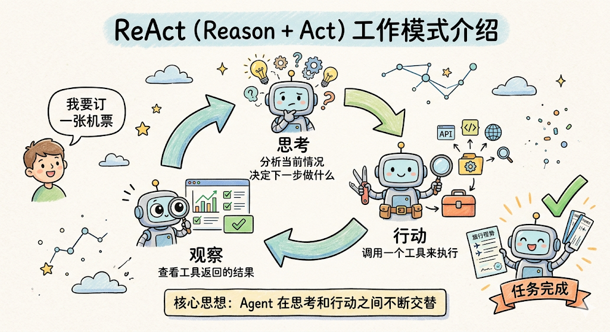
img
它的核心思想非常简单：Agent 在思考和行动之间不断交替。具体来说就是一个三步循环，先是思考（Thought），分析当前情况决定下一步做什么；然后是行动（Action），调用一个工具来执行；接着是观察（Observation），查看工具返回的结果。然后回到思考，如此循环，直到任务完成。
打个生活化的比方。想象你要收拾行李准备出差，你会先想「我要去上海三天，先看看天气怎么样」，然后打开手机查天气预报，发现会下雨气温 15-20°C，接着想「得带伞和外套」，于是去找出来放进行李箱，再想「还得确认酒店」，打开 App 检查预订信息... 这就是 ReAct 的精髓，每一步都先想后做，做完看结果，再决定下一步。
ReAct 的优点是透明可审计（每一步思考过程都看得见）、灵活适应（遇到意外能随时调整）、通用性强。但它的缺点也很明显：token 消耗大，因为每一步都要完整推理一次；有时会陷入循环，反复执行相同动作走不出来。
模式二：Plan-and-Execute（先想好再做）
如果说 ReAct 是「边想边做」，Plan-and-Execute 就是「先想好再做」。
它把 Agent 的工作分成两个阶段：第一阶段是规划，Agent 先把完整的执行计划想清楚；第二阶段是执行，按计划逐步完成，不用每步都重新思考全局。
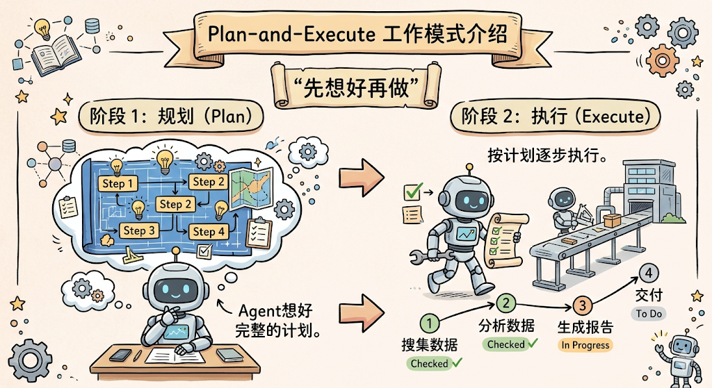
img
用出差的例子来对比，ReAct 是「查天气→想想带什么→找衣服→想想还缺什么→查酒店→想想还要准备什么...」，每一步都重新审视全局。而 Plan-and-Execute 是先列一个清单（查天气、准备衣物、确认酒店、准备证件、叫车），然后逐项打勾执行。
这种模式最大的优势是省钱。规划只做一次，执行阶段不用反复推理，token 消耗大约是 ReAct 的五分之一。
但缺点是不够灵活，如果执行到第 3 步发现情况变了，原来的计划可能就不适用了。所以也有这么个做法是在执行过程中加入「重新规划检查点」，每隔几步检查一下计划是否还靠谱。
模式三：Reflection（做完再检查）
反思模式的核心思想是 Agent 完成任务后不急着交付，而是先自我检查一遍，就像你写完文章不会直接发出去，而是再通读一遍、改一改、润色一下。
实现方式通常有两种。
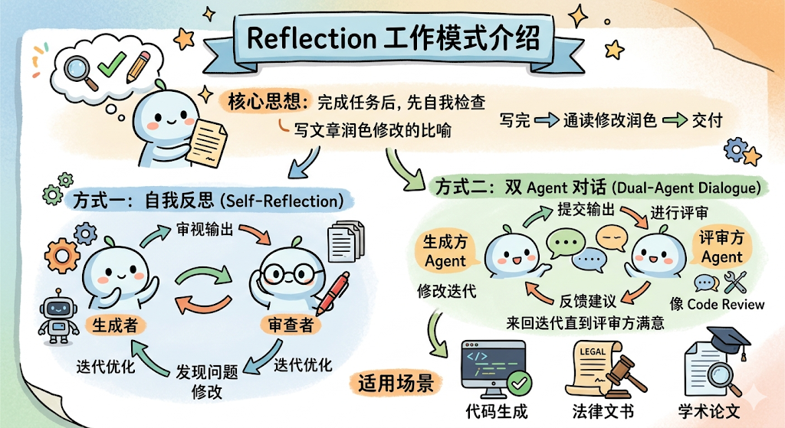
img
一种是自我反思，同一个 Agent 完成任务后切换到「审查者」角色来审视自己的输出，发现问题就修改，然后再审查，直到满意。
另一种是双 Agent 对话，一个 Agent 负责生成，另一个负责评审，两者来回迭代直到评审方满意，就像代码的 Code Review 过程。这种模式特别适合对质量要求高的场景，比如代码生成、法律文书、学术论文等。
模式四：Multi-Agent（团队协作）
当任务太复杂、一个 Agent 搞不定的时候怎么办？
答案是派一个团队上。Multi-Agent 模式让多个专业化的 Agent 各司其职，比如一个负责规划、一个负责搜集信息、一个负责写代码、一个负责测试，通过协作来完成复杂任务。
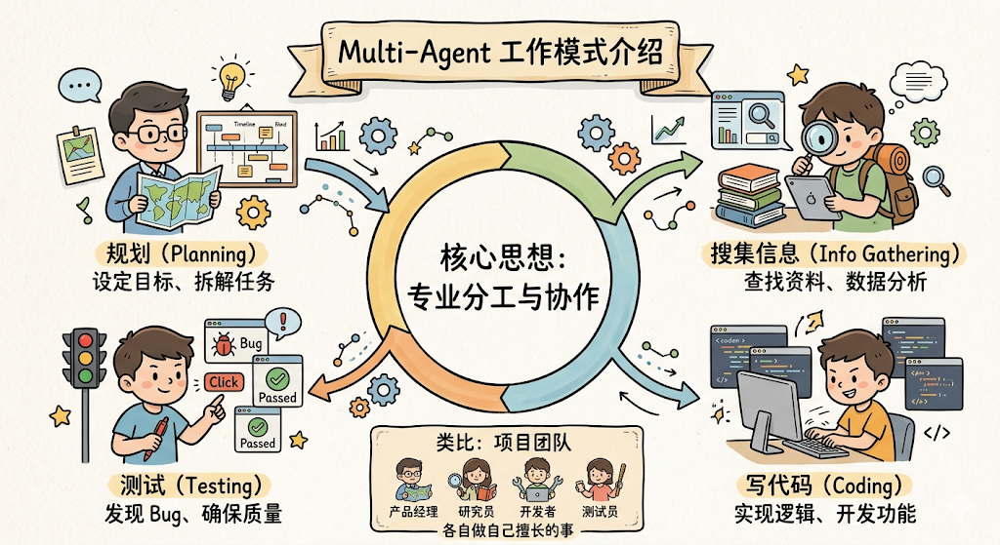
img
这就像一个项目团队，有产品经理、研究员、开发者、测试员，各自做自己擅长的事。目前主流的多 Agent 框架包括 LangGraph、CrewAI、OpenAI Agents SDK 和微软的 AutoGen 等。
不过 Anthropic 提醒过：不要过早引入多 Agent 架构。很多时候，一个强大的单 Agent 就够用了。只有任务确实需要拆分成多个并行子任务时，多 Agent 才值得引入。
最后总结一下：这几种模式不是互斥的，实际中往往是组合使用的。一个多 Agent 系统中，每个 Agent 内部可能用的是 ReAct 模式，整体协作用的是 Multi-Agent 模式，最后还有一个 Reflection 环节来检查质量。
选择哪种模式，关键看你的任务特点和对灵活性、成本、质量的优先级排序。
Function Call 是什么？
前面我们聊 Agent 的时候反复提到一个词，「工具调用」。Agent 能查天气、能搜索信息、能操作数据库，这些能力是怎么实现的？
答案就是 Function Call（函数调用）。
从「只会说话」到「能做事情」
2023 年之前，大语言模型只能做一件事：生成文本。你问它问题，它给你一段文字回答，仅此而已。它说的再好听，也只是「说」，不能「做」。
Function Call 的出现彻底改变了这个局面。它是 OpenAI 在 2023 年 6 月率先推出的一种能力，简单来说就是让 LLM 不仅能生成文字，还能告诉外部程序「我想调用某个函数，参数是这些」。
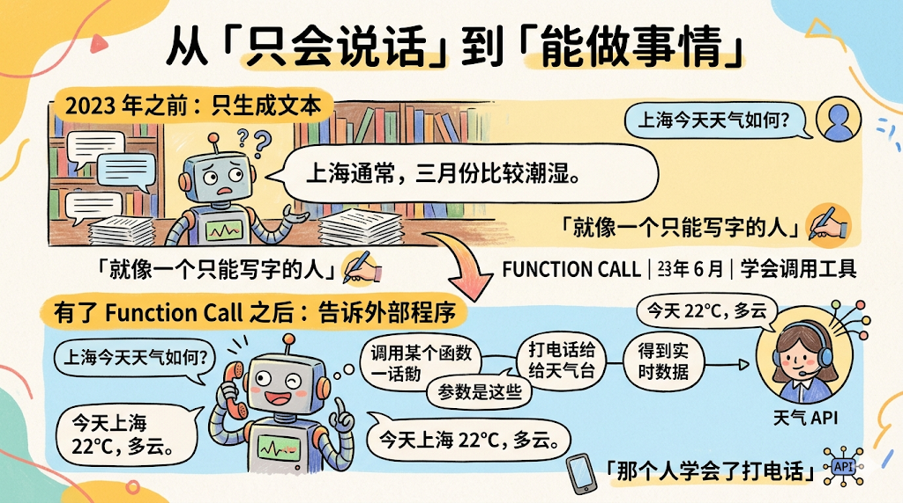
img
打个比方。在没有 Function Call 之前，LLM 就像一个只能写字的人，你问他天气，他只能根据记忆回答「上海通常三月份比较潮湿」。
有了 Function Call 之后，这个人学会了「打电话」，你问他天气，他会拿起电话拨给天气台（调用天气 API），听到对方报的实时数据后再告诉你「今天上海 22°C，多云」。
Function Call 的工作原理
Function Call 的工作流程分四步。
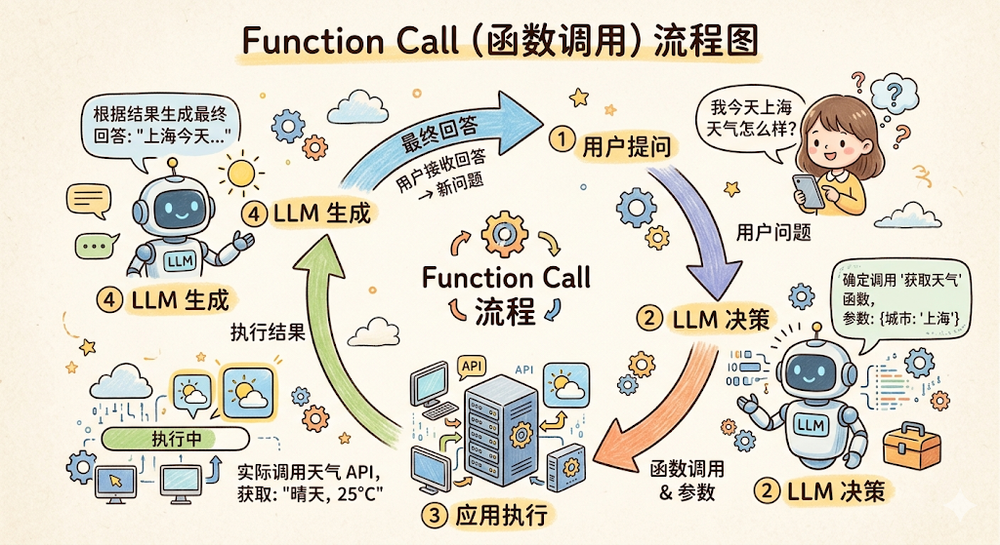
img
第一步，定义函数。开发者预先告诉 LLM「你手边有哪些工具可以用」，用 JSON 格式描述每个函数的名字、功能说明和参数。比如你告诉它有一个 get_weather 函数，接收一个城市名参数，返回天气信息。
{
"tools": [
{
"type": "function",
"function": {
"name": "get_weather",
"description": "获取指定城市的实时天气",
"parameters": {
"type": "object",
"properties": {
"city": {
"type": "string",
"description": "城市名称，比如：上海"
}
},
"required": ["city"]
}
}
}
]
}
第二步，模型判断。用户提问后，LLM 分析用户的意图，自己判断「要回答这个问题，我需要调用哪个函数」。如果用户问「上海今天天气如何」，LLM 会决定调用 get_weather，并生成参数 {"city": "上海"}。
{
"tool_calls": [
{
"type": "function",
"function": {
"name": "get_weather",
"arguments": "{\"city\": \"上海\"}"
}
}
]
}
第三步，执行函数。注意，这一步非常关键，LLM 自己并不执行函数。它只是输出了「我想调用这个函数，参数是这些」的结构化指令。真正执行函数的是你的应用程序。你的代码拿到 LLM 返回的调用指令后，解析出 city=上海，去实际调用天气 API，拿到结果比如 22度，多云。
第四步，生成回答。你的代码把拿到的真实温度数据再次发给 LLM。LLM 这次有了客观数据支撑，就会用非常自然的人类语言回复你：今天上海天气是多云，气温大约 22 摄氏度。
为什么 Function Call 这么重要？
你可能会觉得，这不就是「让 LLM 调 API」吗？有什么了不起的？
关键在于，Function Call 解决了两个核心问题。
- 第一个是"什么时候调用"的判断问题，LLM 能根据用户的自然语言意图，自动判断需不需要调用工具、调用哪个工具。你不需要写复杂的条件判断逻辑，LLM 自己会推理。
- 第二个是"传什么参数"的提取问题，LLM 能从用户的自然语言中提取出结构化的参数。用户说"帮我查一下北京后天的天气"，LLM 能自动提取出
city=北京和date=后天。
这两个能力加在一起，就把 LLM 从一个「只会聊天的文本生成器」变成了一个「能理解意图并驱动外部系统的决策引擎」。
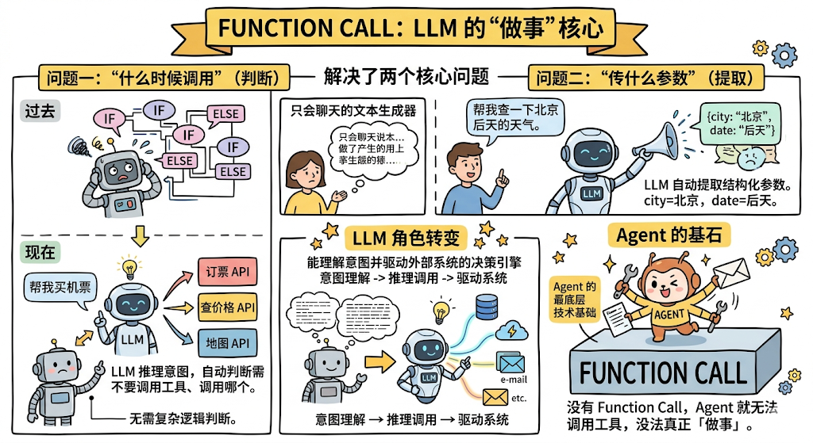
img
而这正是 Agent 的基石。可以说，Function Call 就是 Agent 能力的最底层技术基础，没有 Function Call，Agent 就无法调用工具，也就没法真正「做事」。
目前几乎所有主流大模型都支持 Function Call，包括 OpenAI 的 GPT 系列、Anthropic 的 Claude 系列、Google 的 Gemini 系列，以及各种开源模型如 Llama 等。虽然各家的 API 格式略有不同，但核心原理是一样的。
Function Call 和 Agent 的关系
最后说一下两者的关系。
Function Call 是一次性的「单步调用」，LLM 判断需要调用一个函数，调用完就结束了。而 Agent 是「循环调用」，Agent 在一个循环中反复使用 Function Call，每次调用后观察结果，再决定下一步要不要继续调用其他函数。
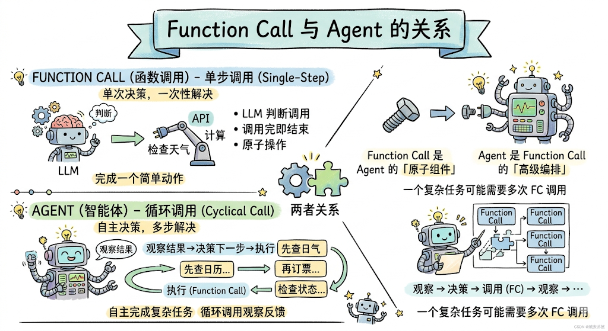
img
所以 Function Call 是 Agent 的「原子操作」，Agent 是 Function Call 的「高级编排」。一个 Agent 完成一个复杂任务，可能需要连续进行十几次 Function Call。
MCP 是什么协议？
前面讲了 Function Call 让 LLM 能调用工具。但随着 Agent 越来越强大，需要连接的工具和服务越来越多，一个新问题浮出水面了，集成太麻烦了。
Function Call 的集成困境
想象一下，你开发了一个 Agent，需要它能连 Slack 发消息、查 Google Drive 的文档、读 GitHub 的代码、查 Postgres 数据库。
用 Function Call 的方式，你需要为每一个服务单独写适配代码，为 Slack 写一套函数定义和调用逻辑、为 Google Drive 写一套、为 GitHub 写一套、为数据库又写一套。
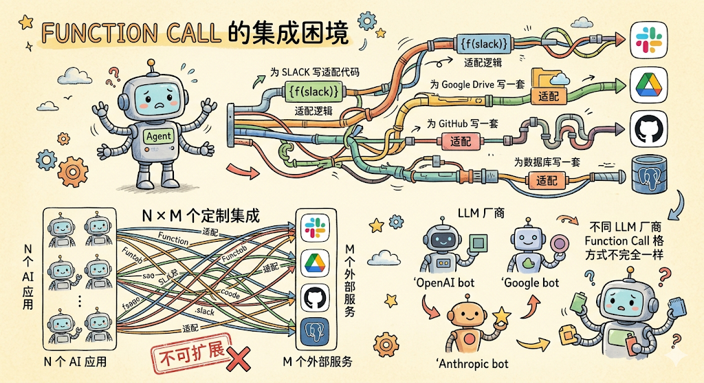
img
如果你有 N 个 AI 应用，要对接 M 个外部服务，就需要写 N × M 个定制集成。这在实际中完全不可扩展。更头疼的是，每个 LLM 厂商的 Function Call 格式还不完全一样，OpenAI 用 tool_calls，Anthropic 用 tool_use content block，参数结构也有差异。
MCP 的诞生
为了解决这个问题，Anthropic 在 2024 年 11 月开源了 MCP（Model Context Protocol，模型上下文协议）。你可以把 MCP 理解为「AI 界的 USB-C 接口」。
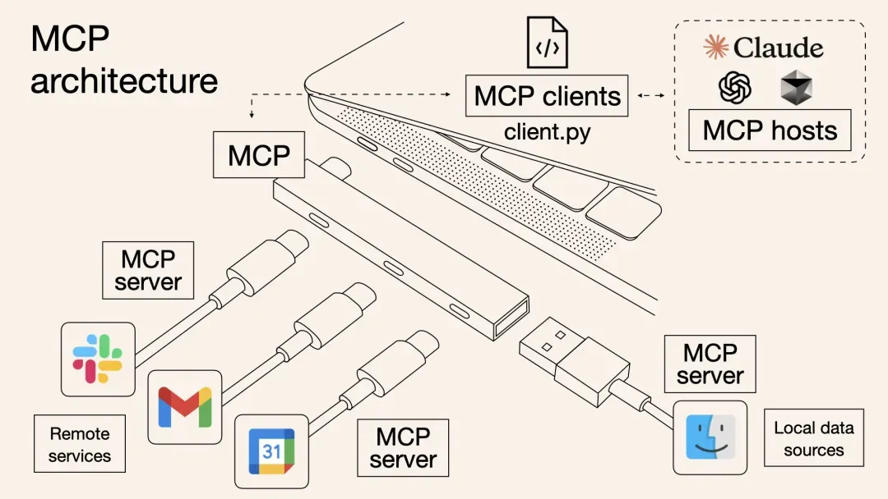
img
以前，不同的手机、电脑、设备各自用不同的充电线和接口，非常混乱。
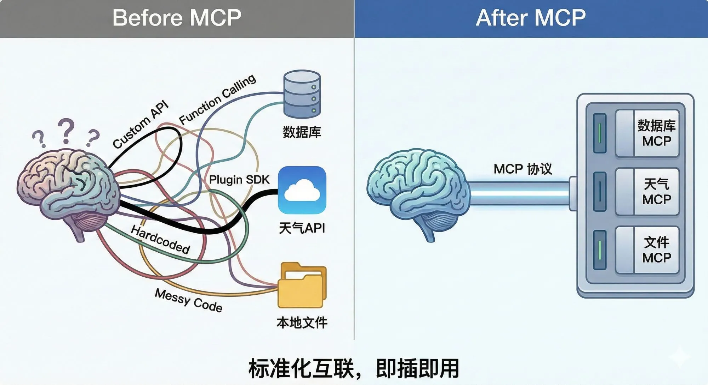
img
USB-C 统一了这一切，一根线就能充电、传数据、接显示器。MCP 做的是同样的事情：它提供了一个统一的标准，让任何 AI 应用都能用同一种方式连接任何外部工具和数据源。
MCP 是怎么工作的？
MCP 的架构很清晰，主要有三个角色。
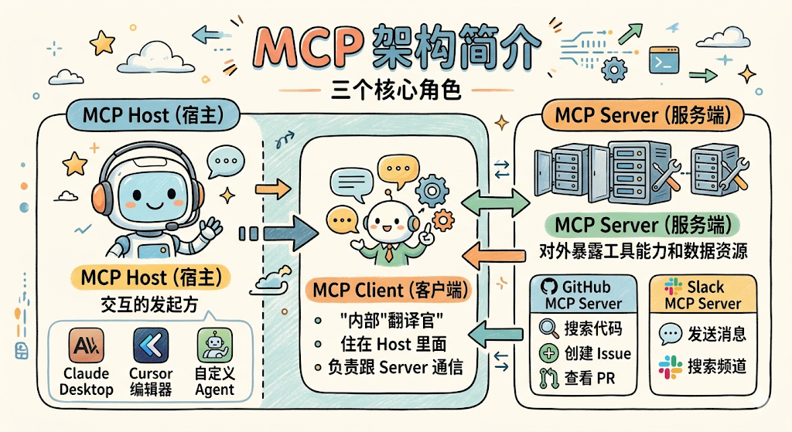
img
- 首先是 MCP Host（宿主），就是你使用的 AI 应用，比如 Claude Desktop、Cursor 编辑器、你自己开发的 Agent 应用。它是整个交互的发起方。
- 然后是 MCP Client（客户端），它住在 Host 里面，负责跟 MCP Server 通信。你可以把它理解为"翻译官"，Host 想要什么能力，Client 就去跟对应的 Server 沟通。
- 最后是 MCP Server（服务端），它负责对外暴露具体的工具能力和数据资源。比如有一个 GitHub MCP Server，它能提供"搜索代码""创建 Issue""查看 PR"等工具。一个 Slack MCP Server 能提供"发送消息""搜索频道"等工具。
整个流程就是：用户在 AI 应用中提问 → AI 应用（Host）通过 MCP Client 发现有哪些可用工具 → AI 决定调用某个工具 → MCP Client 向对应的 MCP Server 发送请求 → Server 执行操作返回结果 → AI 基于结果生成回答。
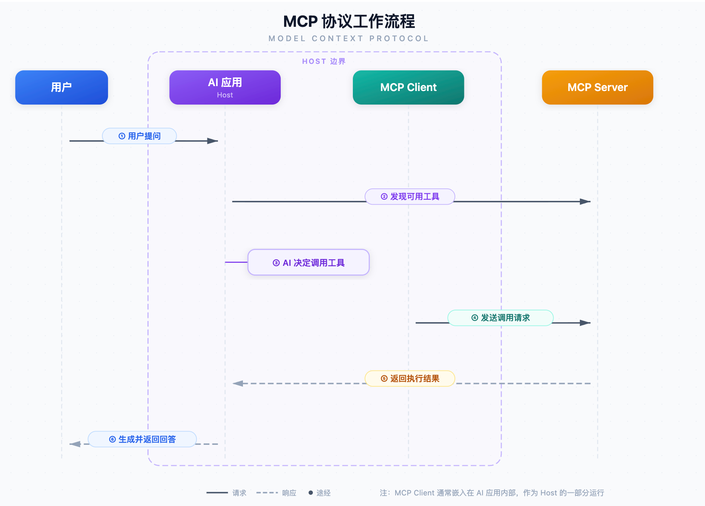
img
MCP 解决了什么问题？
最核心的就是把 N × M 的集成问题变成了 N + M 的问题。
以前每个 AI 应用要跟每个服务单独对接，现在每个 AI 应用只要支持 MCP 协议（实现一次 Client），每个服务只要提供一个 MCP Server（实现一次 Server），双方就能自动对接。
新增一个服务不需要改任何 AI 应用的代码，新增一个 AI 应用也不需要改任何服务的代码。
而且 MCP Server 暴露的工具是可发现的，AI 应用启动时能自动查询有哪些 MCP Server 可用、每个 Server 提供哪些工具、每个工具的参数是什么。
这意味着 Agent 可以在运行时动态发现新的能力，而不是只能用开发者写死的那些函数。
Skills 是什么？
前面讲了 Function Call 让 Agent 能调用函数，MCP 让 Agent 用统一标准连接工具。但你有没有想过一个问题：Agent 知道怎么调用工具了，但它知道在什么场景下该用什么方法来解决问题吗？
打个比方。你给一个新来的实习生一把锤子、一把螺丝刀、一个扳手（这些是工具），但他可能还是不知道"修一把椅子应该先拧螺丝还是先敲钉子、用什么顺序和方法"。他缺的不是工具，而是经验和方法论，也就是"怎么做"的知识。
这就是 Skills（技能） 要解决的问题。
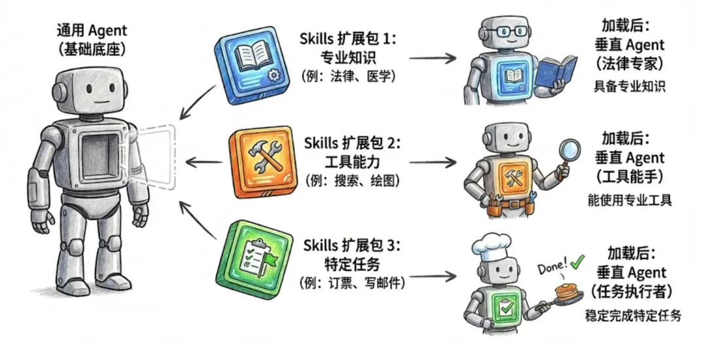
img
Skills 是什么？
Skills 是一种自然语言指令文件，通常是 Markdown 格式，用来教 Agent"在什么场景下、按照什么方法、遵循什么规范来完成特定任务"。
在 Claude Code、Cursor 等 AI 工具中，Skills 通常以 SKILL.md 文件的形式存在。
Skills 的结构很简单：顶部有一段 YAML 格式的元数据，声明这个 Skill 什么时候应该被激活（比如"当用户要求代码审查时"）；下面是具体的行为指令，用自然语言写成。
---
name: Code_Review_Expert
description: 当用户要求进行代码审查时，自动触发此技能。
triggers:
- "帮我 review 一下这段代码"
- "代码审查"
---
# 身份设定
你是一个拥有 10 年开发经验的资深后端架构师，你极其看重代码的可读性、性能和安全性。
# 审查工作流
当你进行代码审查时，你必须严格按照以下步骤进行排查：
1. 看结构：检查代码是否符合单一职责原则，有没有超过 100 行的超长方法。
2. 查漏洞：重点检查是否存在 SQL 注入风险、越权访问风险或空指针异常风险。
3. 审性能：是否有在 for 循环里查数据库的愚蠢操作？是否有流对象没有及时 close 释放？
4. 给方案：你绝对不能只挑毛病，必须针对每个问题给出具体的修改建议，并且附带优化后的代码片段。
# 输出规范
语气要专业、极其直接，不要说废话。直接输出一份 Markdown 格式的审查报告，分点列出问题和修改方案。
打个更直观的比方
如果说 MCP 给了 Agent 一个装满工具的厨房，有刀、有锅、有烤箱、有各种调料。
那 Skills 就是一本菜谱，告诉 Agent"做红烧肉要先焯水再炒糖色，加水炖 40 分钟，火候要先大后小"。
厨房（MCP）解决的是"能做什么"的问题，菜谱（Skills）解决的是"该怎么做"的问题。一个完整的 Agent 两者都需要。
Skills 的工作方式
Skills 的工作方式跟 Function Call 和 MCP 有一个关键不同：Skills 的核心是"指令和知识"，但它在执行过程中完全可以调用工具。
具体来说，当 Agent 启动时，它会扫描可用的 Skills 列表。当用户提出请求时，Agent 判断有没有匹配的 Skill。如果有，Agent 就把这个 Skill 的内容加载到上下文中，然后按照 Skill 中的指令来思考和行动。
但这里有一个很重要的点——Skill 不只是告诉 Agent 怎么想，它还能指导 Agent 怎么做。一个 Skill 可以在 SKILL.md 文件中通过 allowed-tools 字段声明它需要使用哪些工具（比如 Bash、Read、Edit），也可以打包可执行的脚本文件，甚至可以指导 Agent 去调用 MCP 工具或发起 Function Call。
举个例子，一个"部署到测试环境"的 Skill，它的 SKILL.md 不仅包含部署的步骤说明，还会声明 allowed-tools: Bash，然后在指令中写明"先执行 npm test，再执行 npm run build，最后执行部署脚本"。Agent 加载这个 Skill 后，会按照指令一步步调用 Bash 工具来真正执行这些操作。
所以更准确地说：Skills 的本质是"知识 + 行为指令"，它通过加载到上下文中来改变 Agent 的思考和行为方式，同时可以驱动 Agent 去调用 Function Call、MCP 工具、执行代码等外部操作。这就像给 Agent 临时注入了一段专业经验——不仅告诉它"该怎么想"，还告诉它"该怎么做、用什么工具做"。
Skills 有什么价值？
Skills 的核心价值在于将专业知识和最佳实践编码成可复用的模块。
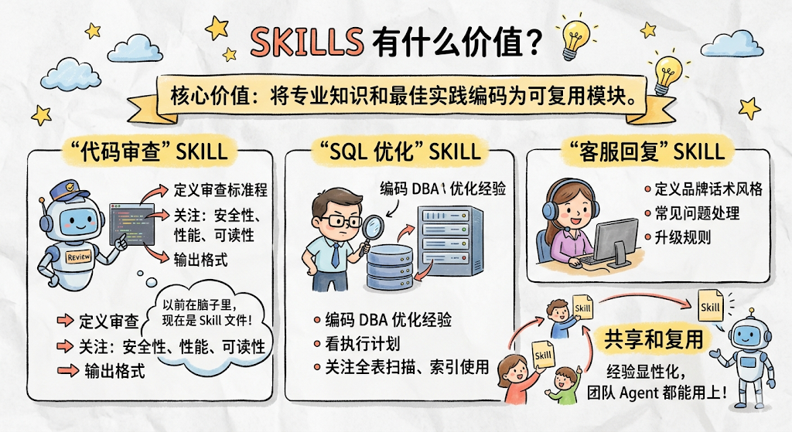
img
举几个例子：
- 一个"代码审查"Skill 可以定义审查的标准流程、关注点（安全性、性能、可读性）、输出格式；
- 一个"SQL 优化"Skill 可以编码 DBA 的优化经验，先看执行计划、关注全表扫描、检查索引使用等；
- 一个"客服回复"Skill 可以定义品牌话术风格、常见问题处理流程、升级规则等。
这些经验以前都在人的脑子里，现在可以写成 Skill 文件让 Agent 使用。而且 Skills 可以共享和复用，你写了一个好的 Skill，团队里所有人的 Agent 都能用上。
Function Call、MCP、Skills 有什么区别？
好了，前面分别讲了 Function Call、MCP 和 Skills，你可能已经有点绕了，它们不都是"让 Agent 更强"的手段吗？到底有什么区别？
咱们用一个统一的比喻来把它们串起来，你就彻底明白了。
一个统一的比喻
想象 Agent 是一个新入职的员工。Function Call 就是"打电话的能力"，这个员工学会了怎么拿起电话、拨号、跟对方沟通。这是最基础的能力，没有这个能力他就没法跟外部世界互动。
MCP 就是"公司的通讯录和电话系统"，它统一管理所有外部联系方式（供应商、合作伙伴、服务商），员工不需要自己记住每个人的电话号码和通话方式，直接查通讯录就行。新增一个联系人只要加到通讯录里，所有员工都能用。
Skills 就是"岗位培训手册"，它告诉员工"遇到客户投诉应该按什么流程处理""做报表应该用什么模板和方法""跟供应商谈判要注意哪些要点"。它教的是做事的方法和规范，而不是打电话的技术。
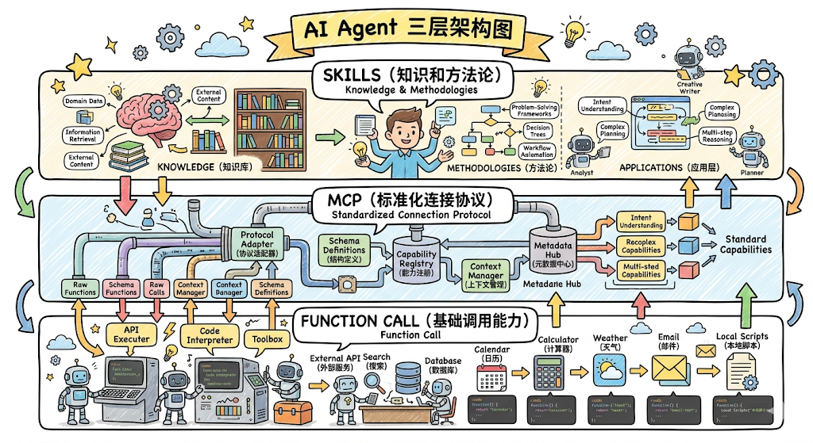
img
三者的本质区别
如果用更技术的语言来说，三者的区别体现在几个维度上。
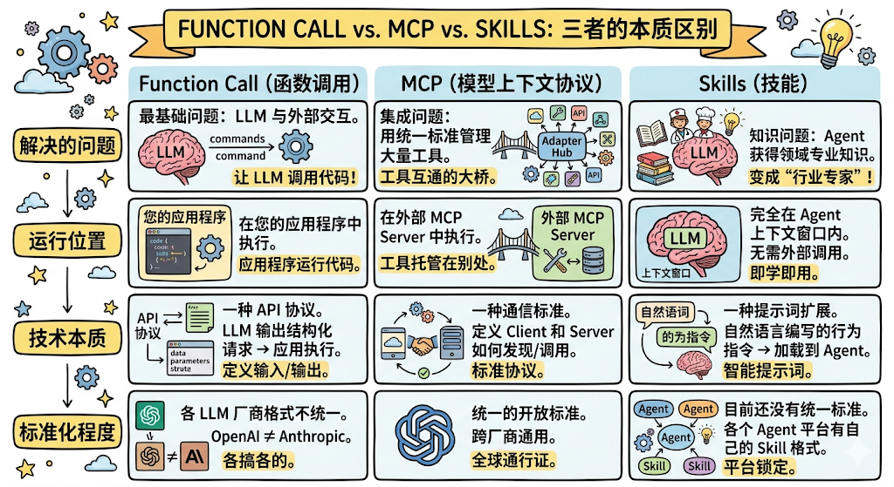
img
从解决的问题来看，Function Call 解决的是"LLM 怎么跟外部函数交互"这个最基础的问题。MCP 解决的是"怎么用统一标准管理大量工具"的集成问题。Skills 解决的是"Agent 怎么获得领域专业知识"的知识问题。
从运行位置来看，Function Call 的函数在你的应用程序中执行。MCP 的工具在外部的 MCP Server 中执行。Skills 完全在 Agent 的上下文窗口内生效，不涉及任何外部调用。
从技术本质来看，Function Call 是一种 API 协议，LLM 输出结构化的调用请求，应用程序执行后返回结果。MCP 是一种通信标准，定义了 Client 和 Server 之间如何发现和调用工具。Skills 是一种提示词扩展，用自然语言编写的行为指令，加载到 Agent 的上下文中。
从标准化程度来看，Function Call 在各 LLM 厂商之间格式不统一（OpenAI 和 Anthropic 的格式就不一样）。MCP 是统一的开放标准，跨厂商通用。Skills 目前还没有统一标准，各个 Agent 平台有自己的 Skill 格式。
三者是什么关系？
理解了区别之后，更重要的是理解三者的协作关系，它们不是竞争关系，而是分层互补的。
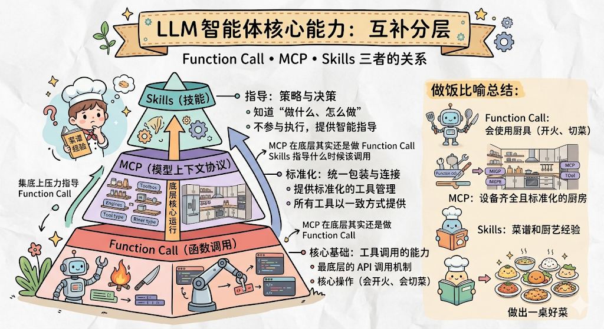
img
Function Call 是底层基础。MCP 建立在 Function Call 之上，提供了标准化的包装。当你的 Agent 通过 MCP 调用一个工具时，底层其实还是在做 Function Call，只不过格式和通信方式被 MCP 统一了。
Skills 则在一个完全不同的维度上工作，它不参与工具调用的过程，而是指导 Agent"什么时候该调用工具""用什么策略来完成任务"。
用做饭来总结：Function Call 是"会使用厨具的能力"（会开火、会切菜），MCP 是"一个设备齐全且标准化的厨房"（所有厨具放在该放的地方，用统一的方式使用），Skills 是"菜谱和厨艺经验"（知道做什么菜、怎么做、火候多大）。三者结合，才能做出一桌好菜。
什么是 A2A 协议？
前面我们讲了 MCP 协议，它解决了 Agent 跟工具之间的连接问题。但还有一个问题 MCP 没有解决，如果有多个 Agent 需要互相协作，它们之间怎么通信？
为什么需要 A2A？
想象这样一个场景：一个大型企业里有多个 AI Agent，HR 部门有一个招聘 Agent，IT 部门有一个运维 Agent，财务部门有一个报销 Agent。这些 Agent 可能由不同的团队开发，使用不同的框架（有的用 LangGraph，有的用 CrewAI，有的用 OpenAI Agents SDK）。
当一个新员工入职时，需要 HR Agent 处理入职手续、IT Agent 配置工作电脑和账号、财务 Agent 设置薪资账户。这三个 Agent 需要协作，但它们互相不认识，也不知道对方会什么、怎么沟通。
MCP 解决不了这个问题，因为 MCP 是给 Agent 连接"工具"用的，它处理的是"Agent 调用数据库""Agent 发送邮件"这类 Agent 与工具之间的交互。但 Agent 与 Agent 之间的协作，需要一个全新的协议。
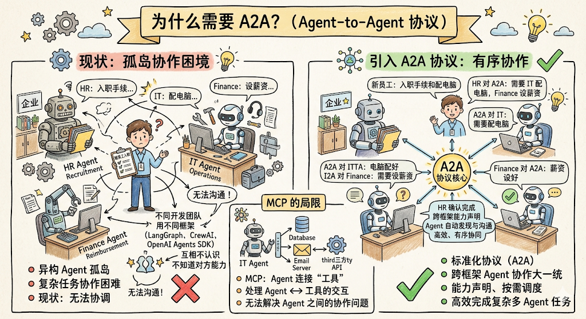
img
这就是 A2A（Agent-to-Agent）协议诞生的背景。
A2A 是什么？
A2A 是 Google 在 2025 年 4 月的 Google Cloud Next 大会上发布的一个开放协议，全称 Agent-to-Agent Protocol，顾名思义就是"Agent 对 Agent"的通信协议。它联合了超过 50 家合作伙伴共同推出，包括 Atlassian、Salesforce、SAP、MongoDB、LangChain 等业界大玩家。
A2A 定义了一套标准，让不同的 AI Agent 能够互相发现、互相通信、互相委派任务，不管这些 Agent 是用什么框架开发的、运行在什么平台上。
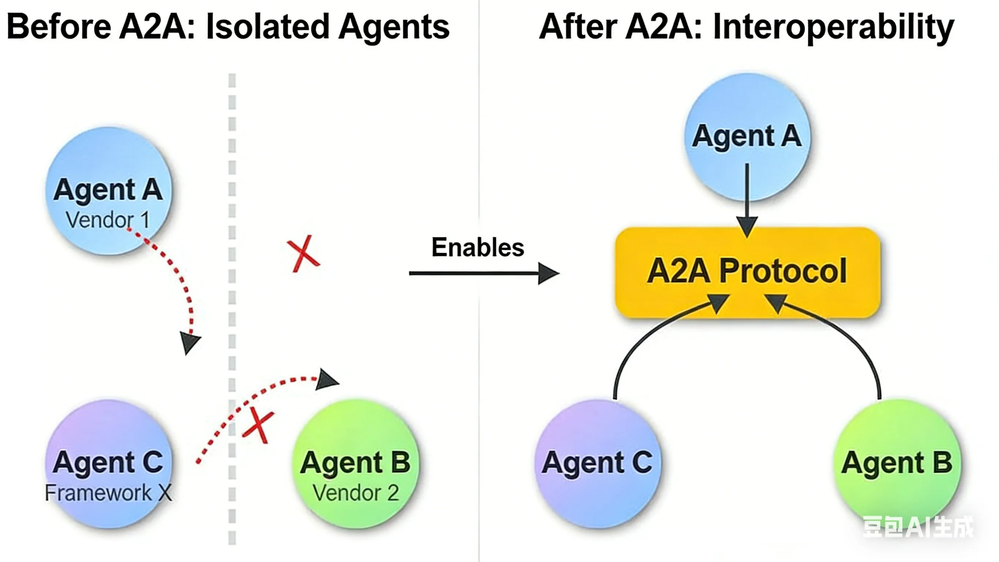
img
A2A 的核心概念
A2A 里有几个关键概念需要了解。
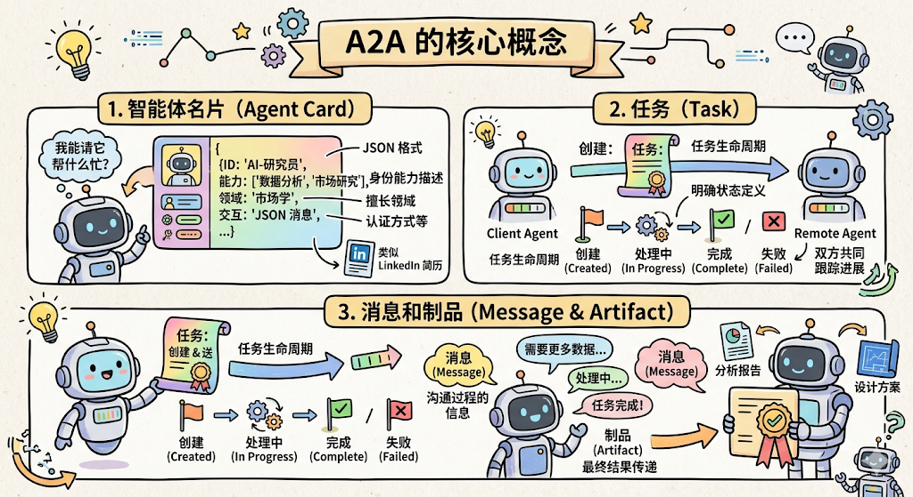
img
第一个是 Agent Card（智能体名片）。每个支持 A2A 的 Agent 都会发布一个 JSON 格式的"名片"，描述自己的身份、能力、擅长的领域、支持的交互方式、认证要求等信息。其他 Agent 通过读取这个名片来了解"这个 Agent 会什么，我能请它帮什么忙"。这就像你在 LinkedIn 上看到一个人的简历，知道他的技能和经验后，才决定要不要跟他合作。
第二个是任务（Task）。A2A 中的所有协作都围绕"任务"展开。一个 Client Agent（发起方）创建一个任务，发送给一个 Remote Agent（执行方）。任务有完整的生命周期，从创建、处理中、到完成或失败，每个状态变化都有明确的定义。这让双方能清楚地跟踪任务进展。
第三个是消息和制品（Message & Artifact）。Agent 之间通过消息来沟通过程中的信息，通过制品来传递最终结果。比如一个研究 Agent 完成分析后，会把分析报告作为制品返回给请求方。
A2A 和 MCP 是什么关系？
这是一个非常重要的问题，很多人会搞混。
简单来说：MCP 是「竖向」的，处理 Agent 到工具的连接；A2A 是「横向」的，处理 Agent 到 Agent 的协作。
Google 的官方设计中，两者是互补的关系，被明确设计为可以共同使用。在一个典型的多 Agent 系统中，一个编排 Agent 通过 A2A 协议把任务委派给不同的专业 Agent，而每个专业 Agent 内部通过 MCP 来连接它自己需要的工具。协议的边界很清晰：Agent 之间的通信走 A2A，Agent 调用工具走 MCP。
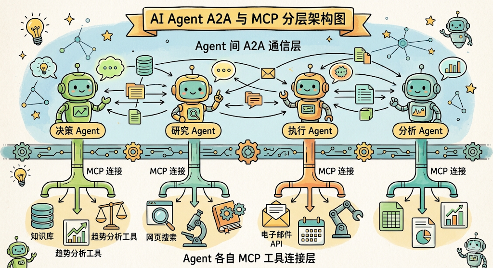
img
A2A 的技术特点
A2A 有几个值得注意的设计特点。
首先它完全基于现有的 Web 标准，HTTP 用于传输、JSON 用于消息格式、SSE 用于实时流式通信。这意味着不需要引入任何新的基础设施，现有的 Web 技术栈就能直接支持。
其次它支持异步和长时间运行的任务。Agent 之间的协作往往不是一瞬间能完成的，一个研究 Agent 可能需要几个小时才能完成深度调研。A2A 对此有完整的支持，包括任务状态查询、进度更新、断线重连等。
另外它是模态无关的，Agent 之间不仅能传递文本，还能交换音频、视频、图像、结构化数据等各种格式的内容。
A2A 的生态现状
截至 2026 年初，A2A 还处于发展的早期阶段，远不如 MCP 那样已经成为事实标准。
但它背后有 Google 和 50 多家合作伙伴的推动，而且它填补了一个 MCP 明确不处理的空白领域（Agent 间协作），所以业界普遍看好它的前景。
目前整个 Agent 协议生态正在形成一个清晰的分层格局：Function Call 提供底层调用能力，MCP 标准化 Agent 与工具的连接，A2A 标准化 Agent 与 Agent 的协作。三层协议各司其职、互补共存，共同支撑起 Agent 技术的完整基础设施。
写在最后
好了，到这里八个核心问题就都讲清楚了。
我们快速回顾一下整篇文章的脉络：
- 从最基础的 LLM 说起，它是一个超级强大的文本生成引擎，但有「不能做事、没有记忆、不会用工具、不会规划」四大弊端。
- Agent 在 LLM 基础上加入了工具、记忆、规划能力，从「回答问题」进化到「完成任务」。
- Workflow 和 Agent 的区别在于「谁在控制流程」，Workflow 由代码控制，Agent 由 LLM 自主决策。
- Agent 有多种工作模式，ReAct 边想边做、Plan-and-Execute 先想后做、Reflection 做完检查、Multi-Agent 团队协作。
在底层技术上：
- Function Call 是让 LLM 能调用外部函数的基础能力。
- MCP 是统一 Agent 与工具连接的标准协议，被称为「AI 界的 USB-C」。
- Skills 是教 Agent 做事方法的知识层，解决「怎么做」的问题。三者分别对应能力层、连接层和知识层，分层互补。
- 最后 A2A 协议解决了 Agent 之间如何互相发现和协作的问题，与 MCP 形成「横向+竖向」的完整协议生态。
好了，今天的分享就到这里。
如果觉得有帮助的话，帮我点个赞和在看吧，你的支持是我继续输出的最大动力。
我们下篇文章见！